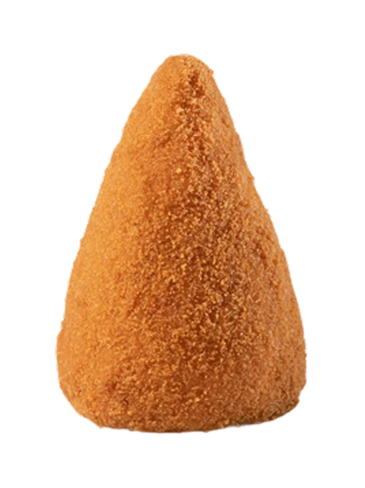
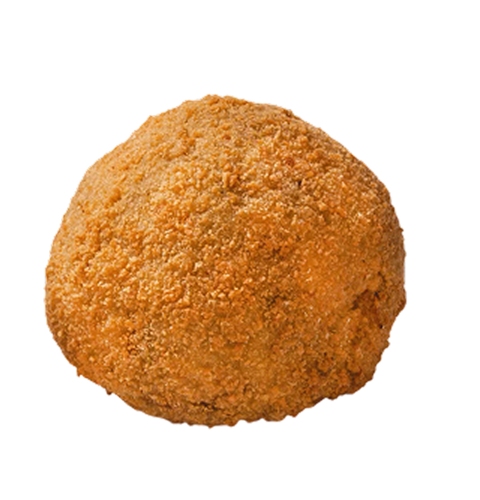
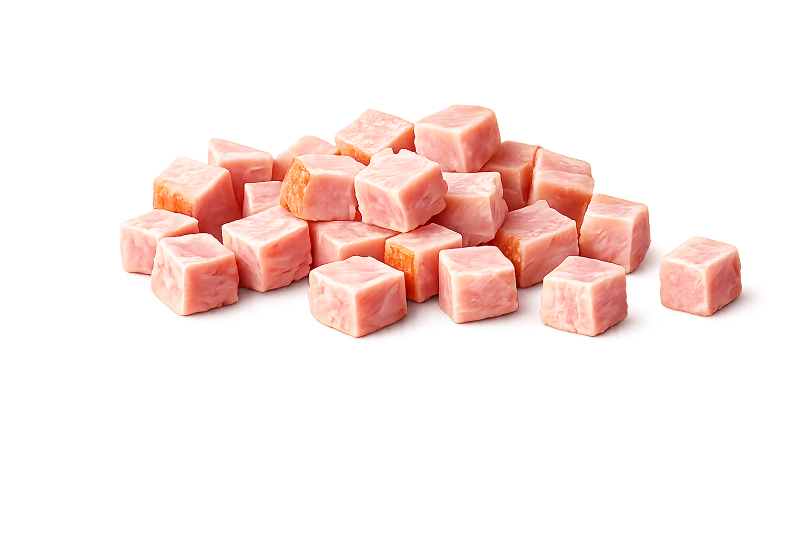
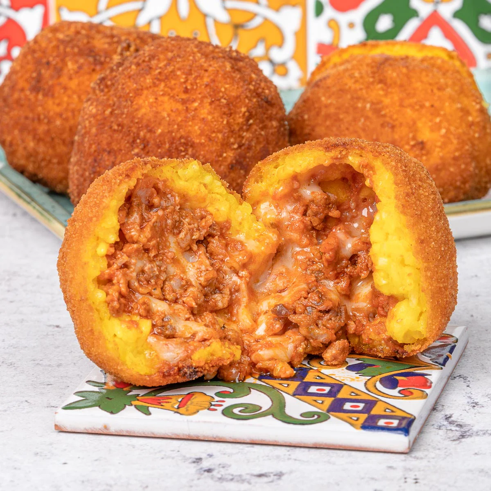
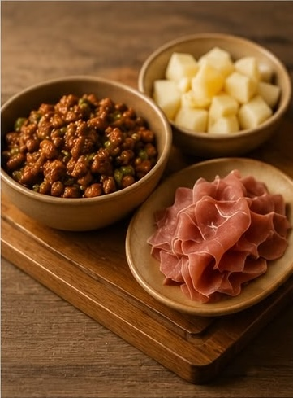
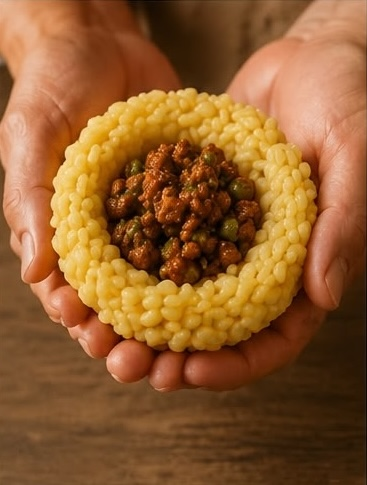
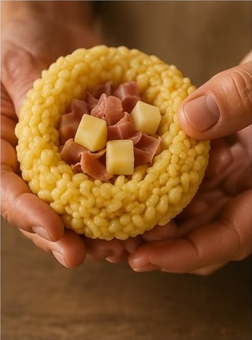

1

PREPARA IL RISO
Prepara il riso con zafferano e sale. Una volta cotto, lascialo raffreddare fino a quando sarà facile da lavorare con le mani.

ICONA DELLA TRADIZIONE
La preparazione dell’arancino è un vero e proprio viaggio culinario che richiede tempo, dedizione e il rispetto di passaggi tramandati di generazione in generazione.


Due ricette autentiche che da generazioni raccontano il vero gusto della Sicilia. L'arancino al burro conquista con il suo cuore cremoso di besciamella, prosciutto e mozzarella, mentre l'arancino al ragù racchiude tutto il sapore della tradizione.


Il ripieno più classico, amato da tutti. Un cuore di ragù ricco e saporito, arricchito con piselli e formaggio filante.
Un ripieno semplice ma irresistibile, con burro, formaggio e prosciutto cotto. Perfetto per chi ama i sapori delicati e avvolgenti.
| Ragù | Burro | |
|---|---|---|
| Intensità | ★★★★☆ | ★★★☆☆ |
| Cremosità | ★★★★☆ | ★★★★★ |
| Piccantezza | ★★☆☆☆ | ★☆☆☆☆ |
Morbidi e saporiti, i piselli arricchiscono il ripieno con il loro gusto autentico e intramontabile.
Gustoso e avvolgente, il prosciutto a dadi aggiunge sapore e rende ogni arancino ancora più sfizioso.
PASSO DOPO PASSO
Ogni arancino nasce da gesti semplici e ingredienti genuini. Scopri come prendono forma i nostri arancini tradizionali.
Prepara il riso con zafferano e sale. Una volta cotto, lascialo raffreddare fino a quando sarà facile da lavorare con le mani.

Cuoci lentamente carne, pomodoro e piselli fino a ottenere un ragù ricco e saporito, simbolo della tradizione siciliana.

Unisci besciamella, prosciutto cotto e mozzarella per creare il classico ripieno cremoso e delicato.

Prendi una porzione di riso, crea delicatamente una cavità al centro e aggiungi il ripieno scelto: ragù o burro.

Richiudi il riso attorno al ripieno e modella l'arancino nella sua forma tradizionale.

Passa ogni arancino nella pastella e ricoprilo uniformemente con il pangrattato.

Immergi gli arancini nell'olio caldo fino a ottenere una doratura uniforme e una crosta croccante.

Lascia riposare qualche minuto e servi gli arancini ancora caldi, con il cuore morbido e saporito.